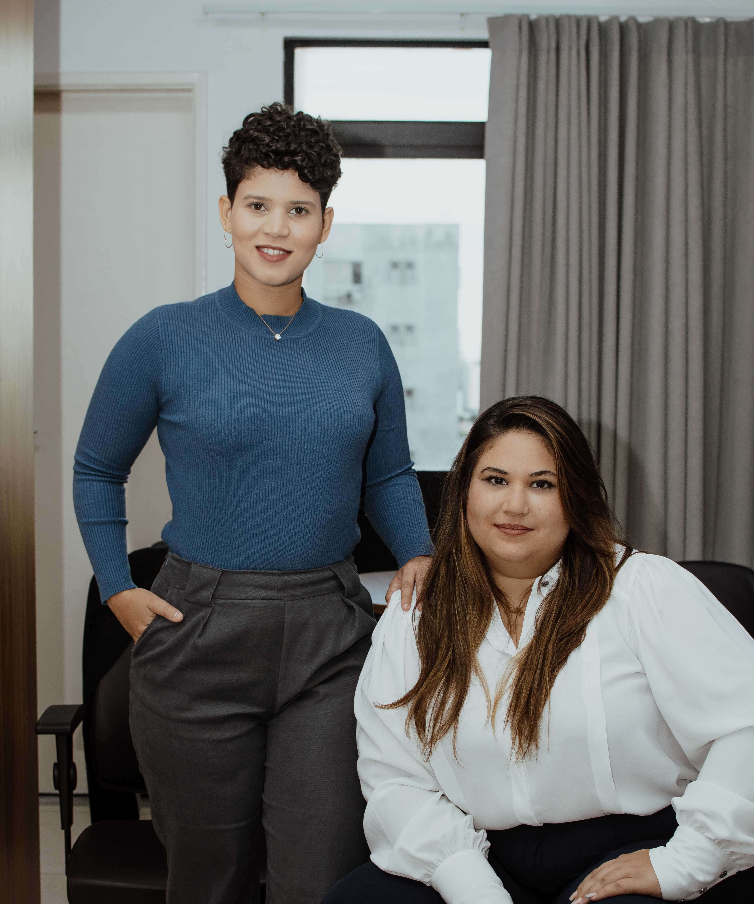

O Franca & Sodré Advocacia é um escritório encabeçado por advogadas de excelência. Sua sede está localizada na cidade de Aracaju, com atuação em todo o país, mediante o auxílio dos meios tecnológicos.
Atuantes na área do Direito Civil, em várias das suas ramificações, com destaque para o direito do consumidor, direito imobiliário, direito das famílias e direito à saúde, dentre outras. CLIQUE AQUI E VEJA AS ÁREAS DE ATUAÇÃO
Com advogadas dotadas de amplo conhecimento sobre o direito e o processo civil, somados à experiência na área e ao atendimento personalizado e humanizado, não há dúvidas de que este escritório lhe trará a melhor solução para o seu problema, com ética, responsabilidade e transparência.

Advogada com atuação voltada ao direito civil e responsável pelas pautas do escritório relativas a direito do consumidor, ações indenizatórias, mandados de segurança, ações de família, envolvendo bens imóveis e demandas relativas aos direitos LGBTQIA+.
Conhecedora do Direito e Processo Civil, possui ampla experiência nas demandas de consumo, já que iniciou sua carreira no meio jurídico ainda antes de formada, atuando em todos os setores do Procon Estadual de Sergipe, possuindo, atualmente, vasta experiência em ações indenizatórias por danos materiais e morais.
Membra da Comissão de Diversidade Sexual e de Gênero da OAB/SE, é incisiva na defesa dos direitos de grupos vulneráveis de maneira geral.

Advogada com atuação voltada ao direito civil e responsável pelas pautas do escritório relativas ao direito à saúde, em especial ações contra planos de saúde, além das ações de família, ações indenizatórias derivadas das relações de consumo, cumprimento de sentença e execuções, além de demandas complexas, que envolvem mais de uma área do direito.
Possui ampla experiência acadêmica, tendo participado da iniciação científica desde o 5º período do curso de Direito e publicado, desde então, inúmeros trabalhos científicos, além de ter participado de vários eventos. Atualmente, encontra-se em fase conclusiva do mestrado em Direitos Humanos, pela Universidade Tiradentes, em Aracaju/SE. Essa experiência lhe concede habilidades discursivas e argumentativas que formam o seu diferencial enquanto advogada.
Já na prática forense, realizou estágio em escritório de advocacia, adquirindo experiência estratégica na condução dos processos. Após formada, passou a atuar por conta própria nas áreas de direito civil e direito penal, tendo afunilado seu interesse profissional na área de direito à saúde, com ênfase nos direitos dos autistas, além das demandas que envolvem direito das famílias.
Membra da Comissão de Defesa dos Direitos da Mulher da OAB/SE desde 2022, Dra. Émilly participa ativamente nos Grupos de Trabalho de Pesquisa, Mulheres Encarceradas e Informativos, todos em função da defesa dos direitos das mulheres, sendo sensível à causa.